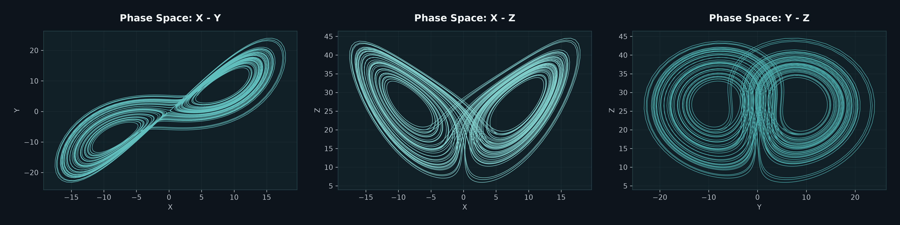
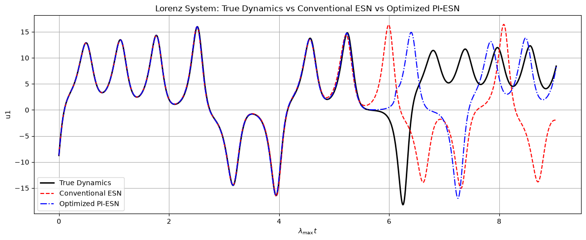
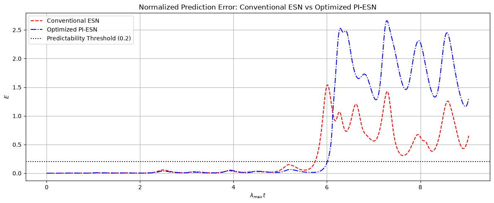

Simulate
Generate Lorenz-system trajectories and prepare time-series data for forecasting experiments, evaluation, and controlled comparison.
A scientific machine-learning project exploring long-horizon forecasting in chaotic dynamics using Echo State Networks, physics-informed reservoir computing, and systematic optimization.

Chaotic systems are inherently difficult to forecast because even very small differences in initial conditions can cause trajectories to diverge rapidly over time. The challenge was to investigate whether reservoir computing, physics-informed constraints, and systematic experimentation could extend the useful forecasting horizon of the Lorenz system.
The project combines dynamical-system simulation, reservoir computing, physical constraints, and optimization within one forecasting workflow.
Generate Lorenz-system trajectories and prepare time-series data for forecasting experiments, evaluation, and controlled comparison.
Use conventional Echo State Networks as a data-driven baseline and Physics-Informed ESNs to incorporate the governing dynamics.
Explore initial-condition behavior and optimize important reservoir hyperparameters using Optuna to improve long-horizon forecasting performance.
Measure forecast quality in Lyapunov-time units and analyze when predicted trajectories begin to diverge from the true chaotic dynamics.
The experimental design emphasizes meaningful evaluation, reproducibility, and a clear distinction between referenced baselines and newly achieved results.
Forecasting performance is evaluated using Lyapunov time rather than only raw simulation time, making the prediction horizon meaningful for a chaotic dynamical system.
Paper-reported ESN and PI-ESN baselines are kept explicitly separate from the achieved experimental forecasting horizon.
Evaluation focuses on trajectory behavior, prediction error, and predictability horizon rather than relying on a single black-box score.
Referenced results reported approximately 4.5 Lyapunov Times for a conventional ESN and 5.5 Lyapunov Times for a Physics-Informed ESN. Through initial-condition experimentation and hyperparameter optimization, the developed experimental approach reached a forecasting horizon of 6.0 Lyapunov Times.
This work demonstrates how physics-informed constraints, reservoir computing, and systematic experimentation can be combined to extend useful forecasting horizons in highly sensitive nonlinear dynamical systems. The project also highlights the importance of evaluating chaotic forecasts using system-aware metrics rather than conventional prediction scores alone.
Experimental results comparing trajectory forecasts and normalized prediction error across Lyapunov time, with the predictability threshold used to determine the useful forecasting horizon.

Comparison of the true Lorenz-system dynamics with the conventional ESN and the optimized PI-ESN across the forecasting horizon.

Normalized prediction error for the conventional ESN and optimized PI-ESN, evaluated against the predictability threshold to determine the useful forecasting horizon.
If your project involves forecasting, scientific machine learning, dynamical systems, optimization, or advanced predictive modeling, let’s discuss the problem and the right technical approach.